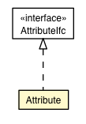

jsl.modeling.elements.resource
Class Attribute

java.lang.Object
 jsl.modeling.elements.resource.Attribute
jsl.modeling.elements.resource.Attribute
- All Implemented Interfaces:
- AttributeIfc, SetValueIfc, GetValueIfc
public class Attribute
- extends Object
- implements AttributeIfc
|
Method Summary |
String |
getName()
Gets this attribute's name. |
double |
getValue()
This method simply
returns the value. |
void |
setValue(double value)
Sets the value |
| Methods inherited from class java.lang.Object |
clone, equals, finalize, getClass, hashCode, notify, notifyAll, toString, wait, wait, wait |
myValue
private double myValue
myName
private String myName
Attribute
public Attribute(String name)
- Parameters:
name -
Attribute
public Attribute(double initialValue,
String name)
- Parameters:
initialValue - name -
getName
public final String getName()
- Gets this attribute's name.
- Returns:
- The name of the attribute type.
getValue
public double getValue()
- Description copied from interface:
GetValueIfc
- This method simply
returns the value.
- Specified by:
getValue in interface GetValueIfc
- Returns:
- The value.
setValue
public void setValue(double value)
- Description copied from interface:
SetValueIfc
- Sets the value
- Specified by:
setValue in interface SetValueIfc
- Parameters:
value - used in the setting.
Copyright © 2012 Manuel D. Rossetti. All Rights Reserved.